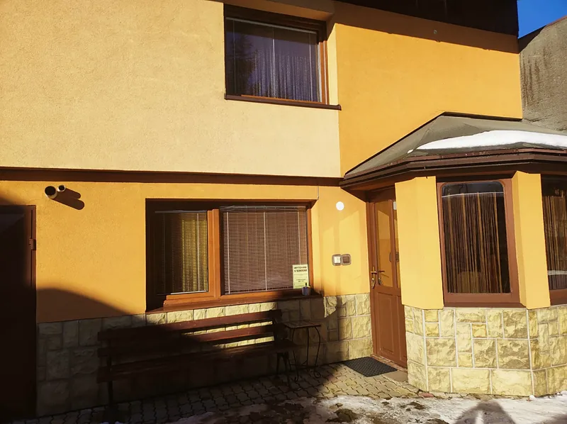
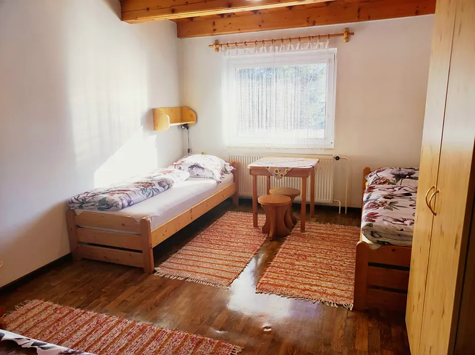
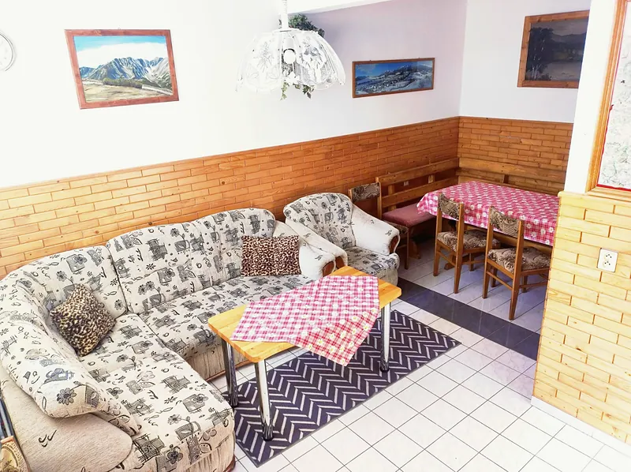
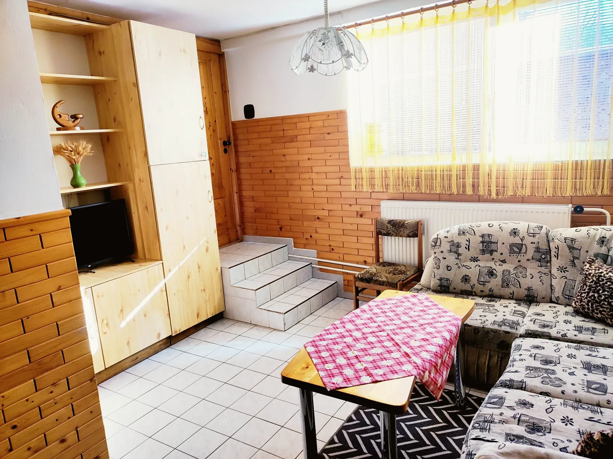
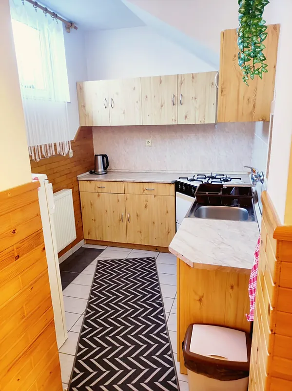
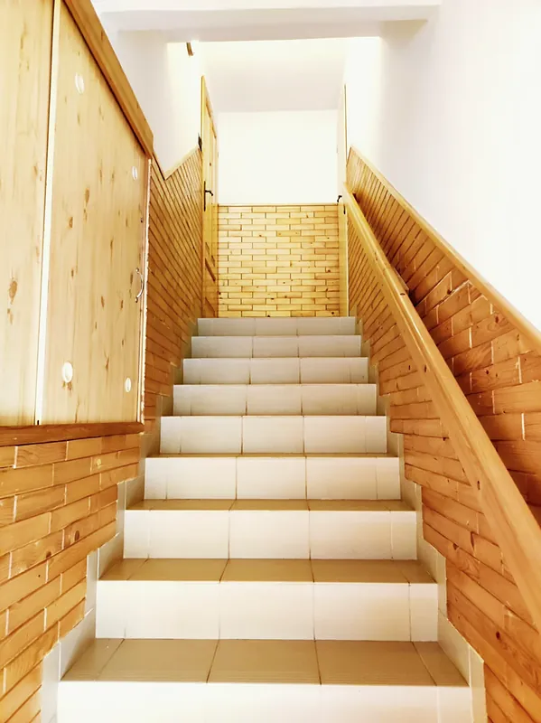
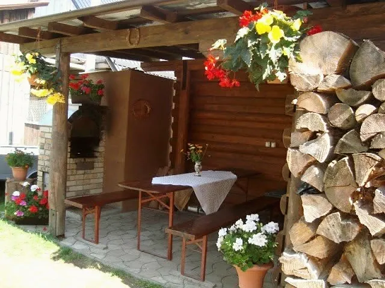
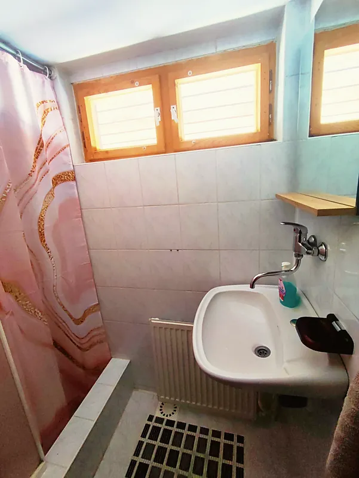
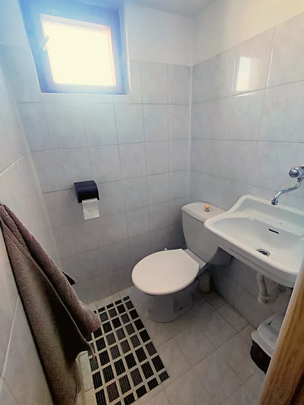

Hrebeň Skorušinských vrchov do Oravíc
4 h 15 minŠtart na autobusovej zastávke v Zuberci, 650 m od nás. Do Habovky po modrej, zo Skorušiny do Oravíc po červenej. Nenáročná hrebeňovka, v cieli termálne kúpalisko.
Samostatná prístavba rodinného domu pod Roháčmi pre 2 až 14 hostí. Ráno vyrazíte na túru rovno od dverí, večer si posedíte v altánku pri kotlíku.



Bývate v samostatnej prístavbe s vlastným vchodom. Každá zo štyroch izieb má dve samostatné postele a stolík, na prístelky máme rozkladacie kreslá a pohovky. Spolu sa u nás vyspí až 14 ľudí.
Na prízemí je spoločenská miestnosť s televízorom, sedačkou a veľkým stolom. Hneď vedľa kuchyňa s chladničkou, mikrovlnkou, rýchlovarnou kanvicou, plynovým sporákom a dvojplatničkou. Varíte si sami.
Cena je za osobu a noc.






Pred domom je altánok s grilom a kotlíkom, vonkajšie posedenie a trampolína pre deti. Autá zaparkujete priamo pri dome, lyže a bicykle uložíte v lyžiarni.
Informácia pre hostí
Sme jednoduchý privát v rodinnom dome, nie hotel. Aby vás nič neprekvapilo:
Zato máte pokoj, priestor pre celú partiu a Roháče za humnami.
Zuberec je vstupná brána do Západných Tatier. Červená značka do Roháčskej doliny vedie priamo cez obec a autobusovú zastávku máte desať minút pešo od domu.
Štart na autobusovej zastávke v Zuberci, 650 m od nás. Do Habovky po modrej, zo Skorušiny do Oravíc po červenej. Nenáročná hrebeňovka, v cieli termálne kúpalisko.
13 km z parkoviska Pod Spálenou (9 km autom). Po červenej k Adamculi, popri štyroch plesách a Ťatliakovej chate. Jeden z najkrajších okruhov v Západných Tatrách.
Nenáročný celoročný okruh dlhý 2,2 km pri chate Zverovka. Dobrá voľba s deťmi alebo na deň príchodu.
Krátky okruh dlhý necelé 2 km k rozhľadni nad obcou s pekným výhľadom na Zuberec.
Časy sú orientačné. Časť chodníkov v Tatranskom národnom parku je od 1. 11. do 31. 5. uzavretá, pred túrou si overte aktuálny stav.